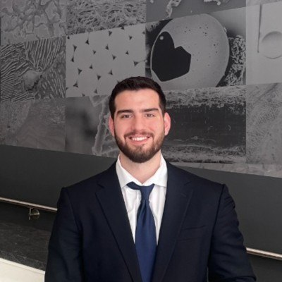

About Me
Most people specialize in one layer. I've worked across all of them: generating data at the bench, automating the instruments that collect it, engineering the pipelines that organize it, and building the models that learn from it. Each phase built on the last, and the combination is what makes my work different.

The Progression
Phase 1
Virginia Tech · 2022–2023
I started generating data. My M.S. thesis investigated how astrocytes remodel brain tissue after traumatic injury. I designed experiments, operated atomic force microscopes and rheometers, and analyzed fluorescence images. Working with complex biological data taught me that measurement quality determines everything downstream.
Skills: tissue engineering, AFM, rheology, immunofluorescence, experiment design, scientific writing
Phase 2
Diagnostics R&D · 2023–2024
I started building the tools that generate data. I designed a 5-axis embedded motion control system with H-Bot kinematics and collision detection, shipped 5 generations of ESP32 firmware (~37K LOC C++ and Python) for a production fluidic dispensing fleet with dual-core RTOS, performed IQ/OQ/PQ validation for fully automated assay instrumentation, and built calibration workflows. This was where I learned to bridge hardware and software.
Skills: ESP32/C++ firmware, dual-core RTOS, motion control, serial protocols, IQ/OQ/PQ validation, calibration, PyQt5
Phase 3
Diagnostics R&D · 2024–2025
I started organizing data at scale. I built a full-stack LIMS (60K+ LOC) with computational image processing achieving 20-100x speedup via Numba JIT, a 20K LOC scientific evaluation platform for next-gen detector selection, and a 10K LOC COMSOL-coupled platform for binding kinetics and microfluidic design-space exploration. I performed finite element analysis (fluid dynamics, transport of diluted species, ray tracing) and designed data pipelines tracking experiments from protocol to result. I learned that most organizations lose more value to poor data management than to poor analysis.
Skills: Python, React, TypeScript, LIMS design, FEA/COMSOL, Numba JIT, image processing, PySide6, Docker
Phase 4
MSAI Labs (DARPA-funded) · 2026–Present
Now I build the models that learn from data. On a DARPA-funded team, I process 327 GB of multi-modal clinical data from thousands of trauma patients, engineer 2,200+ features from physiological waveforms, and train models that predict life-saving interventions with <2ms latency. The signal processing, data engineering, and domain knowledge from every previous phase shows up in this work daily.
Skills: PyTorch, LightGBM, Optuna, SHAP, wavelet analysis, transfer learning, AWS SageMaker
Expertise
FDA classification and regulatory pathways (510(k), De Novo), algorithm transparency, clinical validation protocols, prevalence-normalized evaluation metrics, ICD-compliant scoring
Waveform quality assessment, wavelet decomposition, sample entropy, temporal feature engineering, real-time processing, multi-site data harmonization
EHR integration, multi-source harmonization, time-series alignment, feature engineering from clinical context, ETL pipelines at scale (327 GB+)
Embedded firmware (C++/ESP32), motion control systems, IQ/OQ/PQ validation, calibration workflows, instrument integration, serial communication protocols
PyTorch, LightGBM/XGBoost/CatBoost, Bayesian HPO (Optuna), SHAP explainability, transfer learning, config-driven experiment frameworks, reproducible research
From bench protocols to ML ablation studies. Rigorous experimental design, statistical validation, publication-quality analysis, scientific documentation (Quarto/LaTeX)
Technical Skills
Python, PyTorch, LightGBM, XGBoost, CatBoost, scikit-learn, Optuna, SHAP, transfer learning, deep learning (U-Net, transformers), time-series modeling, feature engineering, model explainability
ECG, PPG, ABP waveform analysis, PyWavelets, sample entropy, signal quality assessment, NeuroKit2, spectral analysis, morphological feature extraction
EHR feature engineering, clinical ML evaluation (AUPRC, AUROC), FDA SaMD pathways, IEC 62304, HIPAA, hemodynamic physiology, trauma triage, multi-site data harmonization
pandas, PyArrow, Parquet, AWS SageMaker, S3, PostgreSQL, ETL pipelines, large-scale data processing (327 GB+), data quality frameworks
FastAPI, React, TypeScript, Docker, Git, pytest, CI/CD, REST APIs, Pydantic, config-driven architectures
Assay development, microfluidics, COMSOL multiphysics, CFD/FEA, embedded firmware (C++/ESP32), lab automation, IQ/OQ/PQ validation, scientific imaging, optical systems
SciPy, NumPy, Numba JIT, MATLAB, COMSOL LiveLink, PySide6/Qt, Bokeh/Panel, Quarto/LaTeX
AWS (SageMaker, S3, EC2), Docker, experiment tracking, model checkpointing, cost-optimized training, reproducible ML pipelines
Experience
ML Research Engineer
MSAI Labs (DARPA-funded)
January 2026 – Present
ML development for the DARPA Triage Challenge. Built end-to-end pipelines for physiological signal processing, feature engineering (2,200+ features), and intervention prediction from streaming clinical data. 56 experiments across 8 research objectives. Transfer learning, Bayesian HPO, explainable AI.
Engineer, Research Scientist
Meso Scale Diagnostics
July 2024 – Present
Full-stack software, data engineering, and computational modeling for diagnostics R&D. Built a full-stack LIMS (60K+ LOC) with computational image processing, a 20K LOC scientific evaluation platform, and a 10K LOC COMSOL-coupled simulation platform. FEA (fluid dynamics, binding kinetics, ray tracing), camera/sensor modeling, and cross-platform desktop GUIs.
Engineer, Assay Automation
Meso Scale Diagnostics
June 2023 – June 2024
Embedded firmware development: 5-axis motion control (C++/ESP32), 5 generations of production firmware (~37K LOC) for a fluidic dispensing fleet with dual-core RTOS. IQ/OQ/PQ validation, calibration workflows. Reduced field service training time by 50-100%.
Graduate Research Assistant
Virginia Tech
Aug 2022 – May 2023
NSF-funded thesis on astrocyte-ECM interactions following traumatic brain injury. Tissue engineering, atomic force microscopy, rheology, immunofluorescence imaging, and hydrogel biomaterial characterization.
R&D Engineer
QuidelOrtho
May 2022 – Aug 2022
R&D engineering internship in in vitro diagnostics (IVD). Assay development and validation support.
Education
Virginia Tech – Wake Forest · May 2023
GPA: 4.0 · Summa Cum Laude
Thesis: In Vitro Astrocyte Remodeling of Extracellular Matrix Following Mild Traumatic Brain Injury
Advisor: Dr. Scott Verbridge · NSF Award 2141291
Virginia Tech · May 2022
GPA: 3.87 · Summa Cum Laude
Whether it's a full-time role, a consulting engagement, or a research collaboration -- I'm interested in hard problems where clinical domain knowledge meets production engineering.